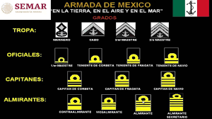

La Secretaría de la Defensa Nacional (SEDENA) es una dependencia del Poder Ejecutivo Federal cuyas funciones específicas las dicta la Constitución y la Ley Orgánica de la Administración Pública Federal. A la vez, constituye el Cuartel General Superior del Ejército y Fuerza Aérea
la SEDENA en su quehacer institucional participa principalmente en los objetivos de los ejes de política pública “Estado de Derecho y Seguridad”, “Sustentabilidad ambiental” y ”Democracia efectiva y política exterior responsable”, establecidos en el PND 2007-2012
Los grados en el Ejército Mexicano se clasifican en la escala jerárquica como: Generales, Jefes, Oficiales y Tropa.Las insignias correspondientes a los grados se portan en las hombreras y en el tocado. Las hombreras llevan junto con el grado una franja de color en el extremo exterior (denominado como "vivo") que varía dependiendo el arma o servicio a que pertenezca el militar.
El personal de generales usan como insignia de su jerarquía, el escudo nacional con estrellas estriadas de cinco picos de color plateado y sobre hombreras o palas con el "vivo" de color dorado.El personal de jefes usan como insignias de su jerarquía estrellas estriadas de cinco picos de color dorado y sobre hombreras o palas con el "vivo" de color del arma o servicio.El personal de oficiales usan como insignias de su jerarquía barras verticales estriadas de color dorado y sobre hombreras o palas con el "vivo" de color del arma o servicio.El personal de clases usan como insignias de su jerarquía en el tocado y sobre hombreras cintas de color negro. Cuando son varias cintas estas están separadas entre sí por un "vivo" correspondiente a su arma o servicio.El distintivo de Soldado de Primera se coloca en la sobre hombrera y consiste en una cinta de color negro de 30 por 8 milímetros de ancho, dejando en las orillas un vivo 2 milímetros del color del arma o servicio respectivoEl personal de cadetes de los establecimientos de educación militar y Cuerpo de Guardias Presidenciales, materializa su jerarquía con cintas de galón dorado de cinco hilos cosidas sobre tela de color distintivo del arma, servicio o plantel al que pertenezcan, se colocarán sobre las mangas a partir del codo hasta la parte inferior de la manga y a la altura de la costura de ésta con el puño.  El distintivo de Soldado de Primera se coloca en la sobrehombrera y consiste en una cinta de color negro de 30 por 8 milímetros de ancho, dejando en las orillas un vivo de 2 milímetros del color del arma o servicio respectivoPara el uniforme de campaña se usan las insignias bordadas en color negro o café (selva o desierto) en tela camuflada, los generales con "vivo" de color negro y el resto del personal sin "vivos".En los grados mostrados aquí se ofrece el ejemplo de los correspondiente al personal de generales, así como el de jefes, oficiales y tropa. El color rojo indica que los grados pertenecen el arma de infantería del Ejército Mexicano, el color púrpura indica grados de la Fuerza Aérea Mexicana.
Para conocer mas acerca de los grados que existen en la SEDENA hacer click aquiEl escalafón militar de México se establece en la Ley Orgánica del Ejército y Fuerza Aérea Mexicanos que fue publicada en el Diario Oficial de la Federación el 26 de diciembre de 1986. Este se divide en Niveles y Grados
El escalafón militar se conforma por los dos más importantes niveles de mando que establece el artículo 10 de la ley orgánica antes dicha (Mando Supremo y Alto Mando), seguidos por los "grados en la escala jerárquica" con los cuales se ejerce la autoridad que establece el artículo 129 de la misma ley orgánica (Generales, Jefes, Oficiales y Tropa: